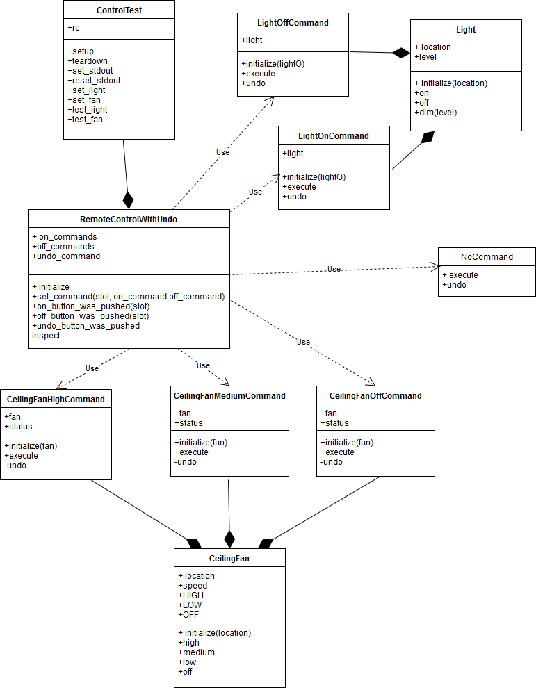

Command Pattern¶ ↑
This documentation was developed as part of a programming activity for the Software Design and Architecture course (Tc3049), at the Tecnológico de Monterrey, Campus Estado de México.
Overview¶ ↑
The Command pattern is a GoF creational design pattern that the command pattern is a behavioral design pattern in which an object is used to encapsulate all information needed to perform an action or trigger an event at a later time.
The UML diagram for this programming activity is as follows:

To test the program, inside the src folder type the following
instruction at the command line:
ruby -I -w control_test.rb
References¶ ↑
-
M. Fowler. <em>UML Distilled: A Brief Guide to the Standard
Object Modeling Language, 3rd Edition.</em>
Addison-Wesley, 2003.
-
E. Gamma, R. Helm, R. Johnson, J. M. Vlissides. <em>Design
Patterns: Elements of Reusable Object-Oriented Software.</em> Addison-Wesley, 1994.
-
R. Olsen. Design Patterns in Ruby. Addison-Wesley,
2007.